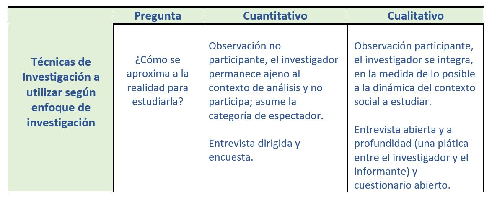

Tal como se ha visto en las primeras actividades realizadas en el curso, existen diferentes métodos de investigación científica, en el caso particular, nos estamos enfocando en el método deductivo que regularmente se utiliza en las Ciencias Sociales.
Ahora bien, una vez definido el problema de investigación es importante determinar cuál será el diseño de la investigación, llevar a cabo la selección de la muestra y determinar el proceso de investigación. Para la obtención del conocimiento, toda investigación tendrá un Marco Metodológico que está referido a la forma como se conducirá la investigación, es decir, los procedimientos y las técnicas en que la información será recopilada para posteriormente ser analizada.
La investigación aplicada tiene como objeto estudiar un problema destinado a la acción, por lo que concentra su atención en las posibilidades concretas de llevar a la práctica las teorías generales, y destinan sus esfuerzos para resolver las necesidades planteadas en la sociedad utilizando diversas técnicas en función del método y objetivo de estudio.
El método de investigación puede ser de varios tipos según el Enfoque (Cualitativo o Cuantitativo) que se le dará a la investigación:
Por su parte, las técnicas son prácticas de apoyo que se dirigen a que se efectúe el método, es la manera de reconocer el camino, "el cómo hacer la investigación", específicamente, son las etapas de operación unidas a elementos prácticos. Ésta permite el control, registro, transformación o manipulación de información. Las técnicas aportan instrumentos y medios para la recolección, concentración y conservación de datos.
En Ciencias Sociales se pueden hacer uso de todos tipos de recursos, tanto de los métodos cuantitativos como cualitativos. En Metodología cualitativa según la disciplina se trabajará con periodización, con fuentes o con rastreo histórico de algunos núcleos conceptuales. Se utilizarán e interpretarán mapas, se realizarán entrevistas y observaciones a participantes para acercarse a distintas problemáticas, hechos o acciones sociales en tiempos y espacios diversos. Esta metodología posibilita aproximarse a las prácticas, hechos y acciones de los sujetos y de las tramas colectivas que construyen determinada problemática social. La metodología cuantitativa utiliza datos numéricos para medir, experimentar, descubrir y comparar distintos aspectos de los fenómenos sociales.
De acuerdo a los procedimientos por emplear, se distinguen dos técnicas básicas de investigación en las Ciencias Sociales: La técnica Documental y la Técnica de Trabajo de Campo.
En la investigación aplicada pueden complementarse o aplicarse de forma independiente la técnica documental y la de campo. Suelen utilizarse ambas técnicas para fortalecer el proceso de investigación.
Por lo que debemos preguntarnos ¿Cuál es el camino más adecuado para resolver el problema que nos hemos planteado? ¿Qué recursos se requieren para cumplir con los objetivos? ¿Qué actividades deben desarrollarse para lograr el objetivo general que se ha planteado?

.
Muestreo
Los estudios de investigación hacen generalizaciones a partir de una muestra, un subconjunto de miembros de una población. Existen dos formas de elegir una muestra: el muestreo probabilístico y el No probabilístico.
El No probabilístico se seleccionan los casos que son convenientes en el cual se pueden identificar categorías relevantes de personas que cumplen con ciertos criterios de acuerdo a los objetivos de la investigación. Puede ser del tipo intencional al apuntar a los individuos que consideren más relevantes para el tema de investigación, es muy utilizado en investigaciones exploratorias y/o de campo.